특수용접기능사 (2013-10-12 기출문제)
1과목: 용접일반
1. 용접부의 외부에서 주어지는 열량을 무엇이라 하는가?
- 용접 입열
- 용접 가열
- 용접 열효율
- 용접 외열
(정답률: 68%)

2. 용접의 단점이 아닌 것은?
- 재질의 변형과 잔류응력 발생
- 용접에 의한 변형과 수축
- 저온취성 발생
- 제품의 성능과 수명 향상
(정답률: 91%)
3. 용접용 산소용기 취급상의 주의사항 중 틀린 것은?
- 통풍이 잘되고 직사광선이 잘 드는 곳에 보관한다.
- 용기 운반 시 충격을 주어서는 안 된다.
- 기름이 묻은 손이나 장갑을 끼고 취급하지 않는다.
- 가연성 물질이 있는 곳에는 용기를 보관하지 말아야 한다.
(정답률: 95%)
4. 용접기에 AW - 300 이란 표시가 있다. 여기서 "300"이 의미하는 것은?
- 2차 최대전류
- 최고 2차 무부하 전압
- 정격 사용률
- 정격 2차 전류
(정답률: 83%)
5. 정격사용률 40%, 정격 2차 전류300(A)인 용접기로 180(A)전류를 사용하여 용접하는 경우 이 용접기의 허용사용률은? (단, 소수점 미만은 버린다)
- 109%
- 111%
- 113%
- 115%
(정답률: 57%)
6. 다음 중 열처리 방법에 있어 불림의 목적으로 가장 적합한 것은?
- 급냉시켜 재질을 경화시킨다.
- 담금질된 것에 인성을 부여한다.
- 재질을 강하게 하고 균일하게 한다.
- 소재를 일정온도에 가열 후 공랭시켜 표준화한다.
(정답률: 58%)
7. 다음 중 용접성이 가장 좋은 스테인리스강은?
- 펄라이트계 스테인리스강
- 페라이트계 스테인리스강
- 마르텐사이트계 스테인리스강
- 오스테나이트계 스테인리스강
(정답률: 78%)
8. 아래 보기 내용중 괄호안 순서대로 알맞은 것은?
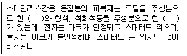
- 티탄계, 라임계
- 일미나이트계, 저수소계
- 라임계, 티탄계
- 저수소계, 일미나이트계
(정답률: 47%)
9. 다음 중 금속재료의 가공방법에 있어 냉간가공의 특징으로 볼 수 없는 것은?
- 제품의 표면이 미려하다.
- 제품의 치수 정도가 좋다.
- 연신율과 단면수축률이 저하된다.
- 가공경화에 의한 강도가 저하된다.
(정답률: 57%)
10. 다음 중 일반적으로 경금속과 중금속을 구분할 때 중금속은 비중이 얼마 이상을 말하는가?
- 1.0
- 2.0
- 4.5
- 7.0
(정답률: 77%)
11. 다음 중 Al, Cu, Mn, Mg을 주성분으로 하는 알루미늄 합금은?
- 실루민
- 두랄루민
- Y합금
- 로우엑스
(정답률: 78%)
12. 다음 중 구리 및 구리합금의 용접성에 대한 설명으로 옳은 것은?
- 순구리의 열전도도는 연강의 8배 이상이므로 예열이 필요 없다.
- 구리의 열팽창계수는 연강보다 50% 이상 크므로 용접 후 응고 수축시 변형이 생기지 않는다.
- 순수구리의 경우 구리에 산소 이외에 납이 불순물로 존재하면 균열 등의 용접결함이 발생된다.
- 구리합금의 경우 과열에 의한 주석의 증발로 작업자가 중독을 일으키기 쉽다.
(정답률: 56%)
13. 니켈(Ni)에 관한 설명으로 옳은 것은?
- 증류수 등에 대한 내식성이 나쁘다
- 니켈은 열간 및 냉간가공이 용이하다
- 360℃ 부근에서는 자기변태로 강자성체이다
- 아황산가스(SO2)를 품는 공기에서는 부식되지 않는다.
(정답률: 58%)
14. 주철의 결점을 개선하기 위하여 백주철의 주물을 만들고 이것을 장시간 열처리하여 탄소의 상태를 분해 또는 소실시켜 인성 또는 연성을 증가시킨 주철은?
- 회주철
- 반주철
- 가단주철
- 칠드주철
(정답률: 50%)
15. 다음 중 탄소강의 인장강도, 탄성한도를 증가시키며 내식성을 향상시키는 성분은?
- 황(S)
- 구리(Cu)
- 인(P)
- 망간(Mn)
(정답률: 32%)
16. 다음 중 칼로라이징(calorizing) 금속침투법은 철강표면에 어떠한 금속을 침투시키는가?
- 규소
- 알루미늄
- 크롬
- 아연
(정답률: 59%)
17. 다음 중 기계구조용 탄소 강재에 해당하는 것은?
- SM30C
- STD11
- SP37
- STC6
(정답률: 73%)
18. 강재표면의 홈이나 개재물, 탈탄층 등을 제거하기 위하여 될 수 있는 대로 얇게 그리고 타원형 모양으로 표면을 깎아내는 가공법은?
- 가우징
- 드래그
- 프로젝션
- 스카핑
(정답률: 84%)
19. 가스절단에서 재료 두께가 25mm 일 때 표준드래그의 길이는 다음 중 몇 mm 정도 인가?
- 10
- 8
- 5
- 2
(정답률: 81%)
20. 심 용접에서 사용하는 통전 방법이 아닌 것은?
- 포일 통전법
- 단속 통전법
- 연속 통전법
- 맥동 통전법
(정답률: 53%)
21. 가스용접법에서 후진법과 비교한 전진법의 설명에 해당하는 것은?
- 용접속도가 빠르다.
- 열 이용률이 나쁘다.
- 용접변형이 작다.
- 용접가능한 판 두께가 두껍다.
(정답률: 65%)
22. 이산화탄소 아크 용접의 특징이 아닌 것은?
- 전원은 교류 정전압 또는 수하특성을 사용한다.
- 가시아크이므로 시공이 편리하다
- MIG용접에 비해 용착금속에 기공 생김이 적다
- 산화 및 질화가 되지 않는 양호한 용착금속을 얻을 수 있다.
(정답률: 49%)
23. 불활성가스 텅스텐 아크용접법의 극성에 대한 설명으로 틀린 것은?
- 직류정극성에서는 모재의 용입이 깊고 비드 폭이 좁다.
- 직류역극성에서는 전극소모가 많으므로 지름이 큰 전극을 사용한다.
- 직류정극성에서는 청정작용이 있어 알루미늄이나 마그네슘 용접에 가스를 사용한다.
- 직류역극성에서는 모재의 용입이 얕고, 비드 폭이 넓다.
(정답률: 60%)
24. 아크에어 가우징의 특징에 대한 설명 중 틀린 것은?
- 가스가우징 보다 작업의 능률이 높다.
- 모재에 미치는 영향이 별로 없다.
- 비철금속의 절단도 가능하다
- 장비가 복잡하여 조작하기가 어렵다.
(정답률: 74%)
25. 아크용접 로봇 자동화시스템의 구성으로 틀린 것은?
- 포지셔너(positioner)
- 아크발생장치
- 모재가공부
- 안전장치
(정답률: 63%)
26. 아크용접에서 정극성과 비교한 역극성의 특징은?
- 모재의 용입이 깊다.
- 용접봉의 녹음이 빠르다.
- 비드 폭이 좁다.
- 후판 용접에 주로 사용된다.
(정답률: 69%)
27. 피복아크 용접봉의 운봉법 중 수직용접에 주로 사용되는 것은?
- 8자형
- 진원형
- 6각형
- 3각형
(정답률: 56%)
28. 피복 아크 용접에서 피복제의 역할이 아닌 것은?
- 아크를 안정되게 한다.
- 스패터를 적게 한다.
- 용착금속에 적당한 합금 원소를 공급한다.
- 용착금속에 산소를 공급한다.
(정답률: 81%)
29. 피복아크 용접기에 관한 설명으로 맞는 것은?
- 용접기는 역률과 효율이 낮아야 한다.
- 용접기는 무부하 전압이 낮아야 한다.
- 용접기의 역률이 낮으면 입력에너지가 증가한다.
- 용접기의 사용률은 아크시간/(아크시간-휴식시간)에 대한 백분율이다.
(정답률: 30%)
30. 산소-아세틸렌가스 용접기로 두께가 3.2㎜인 연강 판을 V형 맞대기 이음을 하려면 이에 적합한 연강용 가스용접봉의 지름(㎜)을 계산식에 의해 구하면 얼마인가?
- 4.6
- 3.2
- 3.6
- 2.6
(정답률: 77%)
31. 산소-아세틸렌가스를 이용하여 용접할 때 사용하는 산소압력 조정기의 취급에 관한 설명 중 틀린 것은?
- 산소용기에 산소압력 조정기를 설치할 때 압력조정기 설치구에 있는 먼지를 털어내고 연결한다.
- 산소압력 조정기 설치구 나사부나 조정기의 각 부에 그리스를 발라 잘 조립되도록 한다.
- 산소압력 조정기를 견고하게 설치한 후 가스 누설여부를 비눗물로 점검한다.
- 산소압력 조정기의 압력 지시계가 잘 보이도록 설치하며 유리가 파손되지 않도록 한다.
(정답률: 86%)
32. 산소-아세틸렌의 불꽃에서 속불꽃과 겉불꽃 사이에 백색의 제3의 불꽃 즉 아세틸렌 페더라고도 하는 것은?
- 탄화 불꽃
- 중성 불꽃
- 산화 불꽃
- 백색 불꽃
(정답률: 59%)
33. CO2 가스 아크 용접에서 플럭스 코어드 와이어의 단면형상이 아닌 것은?
- NCG형
- Y관상형
- 풀(pull)형
- 아코스(arcos)형
(정답률: 58%)
34. CO2 가스 아크 용접 결함에 있어서 다공성이란 무엇을 의미하는가?
- 질소, 수소, 일산화탄소 등에 의한 기공을 말한다.
- 와이어 선단부에 용적이 붙어 있는 것을 말한다.
- 스패터가 발생하여 비드의 외관에 붙어 있는 것을 말한다.
- 노즐과 모재간 거리가 지나치게 작아서 와이어 송급불량을 의미한다.
(정답률: 82%)
35. 다음 중 응급처치 구명 4대 요소에 속하지 않는 것은?
- 상처보호
- 지혈
- 기도유지
- 전문구조기관의 연락
(정답률: 76%)
2과목: 용접재료
36. 다음 용접법 중 용접봉을 용제 속에 넣고 아크를 일으켜 용접하는 것은?
- 원자수소 용접
- 서브머지드 아크 용접
- 불활성 가스 아크 용접
- 이산화탄소 아크 용접
(정답률: 75%)
37. MIG알루미늄 용접을 그 용적 이행 형태에 따라 분류할 때 해당되지 않는 용접법은?
- 단락 아크 용접
- 스프레이 아크 용접
- 펄스 아크 용접
- 저전압 아크 용접
(정답률: 60%)
38. 용접지그 선택의 기준이 아닌 것은?
- 물체를 튼튼하게 고정시킬 크기와 힘이 있어야 할 것
- 용접위치를 유리한 용접자세로 쉽게 움직일 수 있을 것
- 물체의 고정과 분해가 용이해야 하며 청소에 편리할 것
- 변형이 쉽게 되는 구조로 제작될 것
(정답률: 87%)
39. 선박, 보일러 두꺼운 판의 용접 시 용융슬래그와 와이어의 저항 열을 이용 연속적으로 상진하면서 용접하는 것은?
- 테르밋 용접
- 일렉트로 슬래그 용접
- 넌시일드 아크 용접
- 서브머지드 아크 용접
(정답률: 73%)
40. 다음 중 화학적 시험에 해당되는 것은?
- 물성 시험
- 열특성 시험
- 설퍼 프린트 시험
- 함유 수소 시험
(정답률: 65%)
41. 전자 빔 용접의 특징 중 잘못 설명한 것은?
- 용접변형이 적고 정밀용접이 가능하다.
- 열전도율이 다른 이종 금속의 용접이 가능하다.
- 진공 중에서 용접하므로 불순가스에 의한 오염이 적다.
- 용접물의 크기에 제한이 없다.
(정답률: 64%)
42. 납땜의 용제가 갖추어야 할 조건 중 맞는 것은?
- 모재나 땜납에 대한 부식작용이 최대한 일 것
- 납땜 후 슬래그 제거가 용이할 것
- 전기저항 납땜에 사용되는 것은 부도체일 것
- 침지땜에 사용되는 것은 수분을 함유하여야 할 것
(정답률: 66%)
43. 모재 두께가 9~10㎜인 연강 판의 V형 맞대기 피복 아크 용접시 홈의 각도로 적당한 것은?
- 20~40º
- 40~50º
- 60~70º
- 90~100º
(정답률: 60%)
44. 용접 홈 종류 중 두꺼운 판을 한쪽방향에서 충분한 용입을 얻으려고 할 때 사용되는 것은?
- U형 홈
- X형 홈
- H형 홈
- I형 홈
(정답률: 63%)
45. 용접부의 잔류 응력을 제거하기 위한 방법으로 끝이 둥근 해머로 용접부를 연속적으로 때려 용접 표면상에 소성변형을 주어 용접 금속부의 인장응력을 완화하는 방법은?
- 코킹법
- 피닝법
- 저온응력완화법
- 국부풀림법
(정답률: 81%)
46. 용접 분위기 가운데 수소 또는 일산화탄소가 과잉될 때 발생하는 결함은?
- 언더컷
- 기공
- 오버랩
- 스패터
(정답률: 76%)
47. 용접 작업시 전격방지를 위한 주의사항 중 틀린 것은?
- 캡타이어 케이블의 피복상태, 용접기의 접지상태를 확실하게 점검할 것
- 기름기가 묻었거나 젖은 보호구와 복장은 입지 말 것
- 좁은 장소의 작업에서는 신체를 노출시키지 말 것
- 개로 전압이 높은 교류 용접기를 사용할 것
(정답률: 88%)
48. 다음 소화기의 설명으로 옳지 않은 것은?
- A급 화재에는 포말소화기가 적합하다.
- A급 화재란 보통화재를 뜻한다.
- C급 화재에는 CO2 소화기가 적합하다.
- C급 화재란 유류화재를 뜻한다.
(정답률: 74%)
49. 가스용접 장치에 대한 설명으로 틀린 것은?
- 화기로부터 5m 이상 떨어진 곳에 설치한다.
- 전격방지기를 설치한다.
- 아세틸렌가스 집중장치 시설에는 소화기를 준비한다.
- 작업 종료시 메인 밸브 및 콕 등을 완전히 잠근다.
(정답률: 71%)
50. 가스용접에 의한 역화가 일어날 경우 대처방법으로 잘못 된 것은?
- 아세틸렌을 차단한다.
- 산소밸브를 열어 산소량을 증가 시킨다
- 팁을 물로 식힌다.
- 토치의 기능을 점검 한다.
(정답률: 70%)
3과목: 기계제도
51. 기계 제도의 일반 사항에 관한 설명으로 틀린 것은?
- 잘못 볼 염려가 없다고 생각되는 도면은, 도면의 일부 또는 전부에 대하여 비례관계를 지키지 않아도 좋다.
- 선의 굵기 방향의 중심은 이론상 그려야 할 위치 위에 그린다.
- 선이 근접하여 그리는 선의 간격은 원칙적으로 편행선의 경우 선의 굵기의 3배 이상으로 하고, 선과 선의 간격은 0.7㎜이상으로 하는 것이 좋다.
- 다수의 선이 1점에 집중할 경우 그 점 주위를 스머징하여 검게 나타낸다.
(정답률: 32%)
52. 제도에 사용되는 문자 크기의 기준으로 맞는 것은?
- 문자의 폭
- 문자의 대각선의 길이
- 문자의 높이
- 문자의 높이와 폭의 비율
(정답률: 48%)
53. 배관용 탄소 강관의 KS기호는?
- SPP
- SPCD
- STKM
- SAPH
(정답률: 53%)
54. 배관에서 유체의 종류 중 공기를 나타내는 기호는?
- A
- C
- S
- W
(정답률: 84%)
55. 나사 표시기호 "M50 × 2" 에서 "2"는 무엇을 나타내는가?
- 나사 산의 수
- 나사 피치
- 나사의 줄 수
- 나사의 등급
(정답률: 73%)
56. 치수를 나타내기 위한 치수선의 표시가 잘못된 것은?
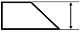
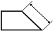
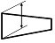
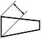
(정답률: 61%)
57. 그림과 같은 도면에서 가는 실선으로 대각선을 그려 도시한 면의 설명으로 올바른 것은?
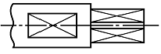
- 대상의 면이 평면임을 도시
- 특수 열처리한 부분을 도시
- 다이아몬드의 볼록 현상을 도시
- 사각형으로 관통한 면
(정답률: 63%)
58. 그림과 같은 양면 필릿 용접기호를 가장 올바르게 해석한 것은?
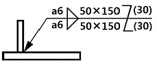
- 목길이 6mm, 용접길이 150mm, 인접한 용접부 간격 50mm
- 목길이 6mm, 용접길이 50mm, 인접한 용접부 간격 30mm
- 목두께 6mm, 용접길이 150mm, 인접한 용접부 간격 30mm
- 목두께 6mm, 용접길이 50mm, 인접한 용접부 간격 50mm
(정답률: 61%)
59. 제3각법으로 정투상한 그림과 같은 정면도와 우측면도에 가장 적합한 평면도는?
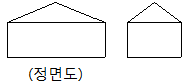
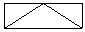
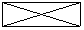
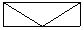
(정답률: 78%)
60. 그림의 A 부분과 같이 경사면부가 있는 대상물에서 그 경사면의 실형을 표시할 필요가 있는 경우 사용하는 투상도는?
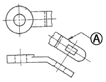
- 국부 투상도
- 전개 투상도
- 회전 투상도
- 보조 투상도
(정답률: 44%)